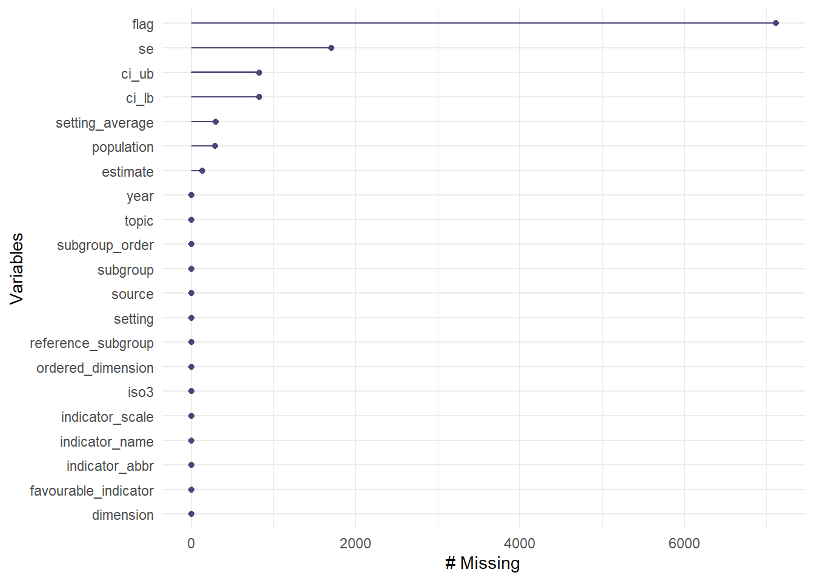

#load needed packages. make sure they are installed.
library(readxl) #for loading Excel files
library(dplyr) #for data processing/cleaning
library(tidyr) #for data processing/cleaning
library(skimr) #for nice visualization of data
library(here) #to set paths
library(naniar) #to look for missing dataData Exploring, Cleaning, and Wrangling
Processing script with code pulled in
This is Quarto file processes code chunks located in the processingcode.r script.
Setup
The script below indicates which R file the Quarto should pull from.
Load needed packages for data cleaning.
Data loading
Load data into raw_data folder and assign to rawdata
#path to data
data_location <- here::here("data","raw_data","202206-repository-tb.xlsx")
#load data and assign to rawdata
rawdata <- readxl::read_excel(data_location)Explore data
Let’s look at the data using glimpse() and skim() which both present an overview of the data. Running gg_miss_var() will check for missing data by each variable.
#take a look at the data
dplyr::glimpse(rawdata)Rows: 7,473
Columns: 21
$ setting <chr> "Afghanistan", "Afghanistan", "Afghanistan", "Afg…
$ year <dbl> 2010, 2010, 2010, 2010, 2010, 2010, 2010, 2010, 2…
$ source <chr> "MICS", "MICS", "MICS", "MICS", "MICS", "MICS", "…
$ indicator_abbr <chr> "bcg", "bcg", "bcg", "bcg", "bcg", "bcg", "bcg", …
$ indicator_name <chr> "BCG immunization coverage among one-year-olds (%…
$ dimension <chr> "Economic status (wealth quintile)", "Economic st…
$ subgroup <chr> "Quintile 1 (poorest)", "Quintile 2", "Quintile 3…
$ estimate <dbl> 53.76060, 61.90263, 58.12188, 65.14779, 77.85419,…
$ se <dbl> 4.204196, 3.117296, 3.371752, 3.772776, 2.239340,…
$ ci_lb <dbl> 45.46945, 55.61623, 51.38703, 57.41825, 73.14312,…
$ ci_ub <dbl> 61.84886, 67.81393, 64.56706, 72.15468, 81.94288,…
$ population <dbl> 532.1957, 549.4944, 495.0633, 472.5659, 447.2211,…
$ flag <chr> NA, NA, NA, NA, NA, NA, NA, NA, NA, NA, NA, NA, N…
$ setting_average <dbl> 62.88902, 62.88902, 62.88902, 62.88902, 62.88902,…
$ iso3 <chr> "AFG", "AFG", "AFG", "AFG", "AFG", "AFG", "AFG", …
$ favourable_indicator <dbl> 1, 1, 1, 1, 1, 1, 1, 1, 1, 1, 1, 1, 1, 1, 1, 1, 1…
$ indicator_scale <dbl> 100, 100, 100, 100, 100, 100, 100, 100, 100, 100,…
$ ordered_dimension <dbl> 1, 1, 1, 1, 1, 1, 1, 1, 0, 0, 0, 0, 1, 1, 1, 1, 1…
$ subgroup_order <dbl> 1, 2, 3, 4, 5, 1, 2, 3, 0, 0, 0, 0, 1, 2, 3, 4, 5…
$ reference_subgroup <dbl> 0, 0, 0, 0, 0, 0, 0, 0, 0, 1, 0, 1, 0, 0, 0, 0, 0…
$ topic <chr> "TB", "TB", "TB", "TB", "TB", "TB", "TB", "TB", "…#another view of the data
skimr::skim(rawdata)| Name | rawdata |
| Number of rows | 7473 |
| Number of columns | 21 |
| _______________________ | |
| Column type frequency: | |
| character | 9 |
| numeric | 12 |
| ________________________ | |
| Group variables | None |
Variable type: character
| skim_variable | n_missing | complete_rate | min | max | empty | n_unique | whitespace |
|---|---|---|---|---|---|---|---|
| setting | 0 | 1.00 | 4 | 37 | 0 | 194 | 0 |
| source | 0 | 1.00 | 3 | 61 | 0 | 8 | 0 |
| indicator_abbr | 0 | 1.00 | 3 | 16 | 0 | 14 | 0 |
| indicator_name | 0 | 1.00 | 23 | 67 | 0 | 14 | 0 |
| dimension | 0 | 1.00 | 3 | 33 | 0 | 7 | 0 |
| subgroup | 0 | 1.00 | 4 | 29 | 0 | 19 | 0 |
| flag | 7113 | 0.05 | 30 | 55 | 0 | 3 | 0 |
| iso3 | 0 | 1.00 | 3 | 3 | 0 | 194 | 0 |
| topic | 0 | 1.00 | 2 | 2 | 0 | 1 | 0 |
Variable type: numeric
| skim_variable | n_missing | complete_rate | mean | sd | p0 | p25 | p50 | p75 | p100 | hist |
|---|---|---|---|---|---|---|---|---|---|---|
| year | 0 | 1.00 | 2010.88 | 7.40 | 1991 | 2006.00 | 2012.00 | 2017.00 | 2020.00 | ▁▂▅▆▇ |
| estimate | 132 | 0.98 | 74.18 | 56.58 | 0 | 48.01 | 84.09 | 95.34 | 1014.00 | ▇▁▁▁▁ |
| se | 1705 | 0.77 | 1.71 | 1.21 | 0 | 0.92 | 1.46 | 2.20 | 14.07 | ▇▁▁▁▁ |
| ci_lb | 824 | 0.89 | 66.89 | 40.77 | 0 | 43.26 | 79.97 | 91.51 | 738.00 | ▇▁▁▁▁ |
| ci_ub | 824 | 0.89 | 90.07 | 106.22 | 0 | 64.56 | 91.78 | 98.18 | 2176.07 | ▇▁▁▁▁ |
| population | 287 | 0.96 | 2164009.02 | 25032321.78 | 18 | 300.80 | 752.27 | 3212.95 | 738247340.00 | ▇▁▁▁▁ |
| setting_average | 294 | 0.96 | 76.35 | 53.65 | 0 | 56.01 | 84.75 | 94.98 | 831.00 | ▇▁▁▁▁ |
| favourable_indicator | 0 | 1.00 | 0.76 | 0.43 | 0 | 1.00 | 1.00 | 1.00 | 1.00 | ▂▁▁▁▇ |
| indicator_scale | 0 | 1.00 | 10525.91 | 30467.66 | 10 | 100.00 | 100.00 | 100.00 | 100000.00 | ▇▁▁▁▁ |
| ordered_dimension | 0 | 1.00 | 0.55 | 0.50 | 0 | 0.00 | 1.00 | 1.00 | 1.00 | ▆▁▁▁▇ |
| subgroup_order | 0 | 1.00 | 1.42 | 1.60 | 0 | 0.00 | 1.00 | 3.00 | 5.00 | ▇▂▂▁▁ |
| reference_subgroup | 0 | 1.00 | 0.22 | 0.41 | 0 | 0.00 | 0.00 | 0.00 | 1.00 | ▇▁▁▁▂ |
#check for missing data by each column
gg_miss_var(rawdata)Warning: The `guide` argument in `scale_*()` cannot be `FALSE`. This was deprecated in
ggplot2 3.3.4.
ℹ Please use "none" instead.
ℹ The deprecated feature was likely used in the naniar package.
Please report the issue at <https://github.com/njtierney/naniar/issues>.
The data has the countries listed under setting, year of the data, the indicator that is being studied, and the dimension and subgroup for each observation. The estimate column holds the actual percentage or number of interest. Other variables on the data set contain formatting information.
The skim() function provides more information of the missing data and the numeric summaries (mean, median, percentiles, etc). The gg_miss_var() helps visually display the missing data.
I would also like a list of the indicator names and a count of how many countries are in the data set.
#look at what indicators are in the dataset
unique(rawdata$indicator_name) [1] "BCG immunization coverage among one-year-olds (%)"
[2] "People who report TB is spread through coughing (%)"
[3] "People who report TB is spread through coughing - Female (%)"
[4] "People who report TB is spread through coughing - Male (%)"
[5] "Case detection rate (%)"
[6] "TB incidence (new infections per 100 000 population)"
[7] "TB mortality (deaths per 100 000 population)"
[8] "People with MDR/RR-TB (%)"
[9] "People who would want a family member's TB kept secret (%)"
[10] "People who would want a family member's TB kept secret - Male (%)"
[11] "TB prevalence (cases per 100 000 population)"
[12] "Prevalence to notification ratio (years)"
[13] "Families affected by TB facing catastrophic costs due to TB (%)"
[14] "People who would want a family member's TB kept secret - Female (%)"#count of the number of countries
length(unique(rawdata$setting))[1] 194There are 14 indicators and 194 countries.
Cleaning
Now the data cleaning can get started. This phase will coincide with data exploration, so more cleaning will most likely occur in the exploratory_analysis.qmd.
To start, I want the indicators to move to columns using pivot_wider() function so each indicator has a column. I will also subset the columns I would like to keep moving into the exploratory phase. The wide version of the data will be assigned to wide_data.
# Pivot data wider so each indicator has a column
wide_data <- rawdata %>%
select(c(setting, year, indicator_name,
indicator_abbr, dimension, subgroup,
estimate, population)) %>%
pivot_wider(names_from = "indicator_name", values_from = "estimate")
slice(wide_data)# A tibble: 7,473 × 20
setting year indic…¹ dimen…² subgr…³ popul…⁴ BCG i…⁵ Peopl…⁶ Peopl…⁷ Peopl…⁸
<chr> <dbl> <chr> <chr> <chr> <dbl> <dbl> <dbl> <dbl> <dbl>
1 Afghan… 2010 bcg Econom… Quinti… 532. 53.8 NA NA NA
2 Afghan… 2010 bcg Econom… Quinti… 549. 61.9 NA NA NA
3 Afghan… 2010 bcg Econom… Quinti… 495. 58.1 NA NA NA
4 Afghan… 2010 bcg Econom… Quinti… 473. 65.1 NA NA NA
5 Afghan… 2010 bcg Econom… Quinti… 447. 77.9 NA NA NA
6 Afghan… 2010 bcg Educat… No edu… 2267. 61.1 NA NA NA
7 Afghan… 2010 bcg Educat… Primar… 122. 76.3 NA NA NA
8 Afghan… 2010 bcg Educat… Second… 108. 85.9 NA NA NA
9 Afghan… 2010 bcg Place … Rural 2060. 59.8 NA NA NA
10 Afghan… 2010 bcg Place … Urban 436. 77.3 NA NA NA
# … with 7,463 more rows, 10 more variables: `Case detection rate (%)` <dbl>,
# `TB incidence (new infections per 100 000 population)` <dbl>,
# `TB mortality (deaths per 100 000 population)` <dbl>,
# `People with MDR/RR-TB (%)` <dbl>,
# `People who would want a family member's TB kept secret (%)` <dbl>,
# `People who would want a family member's TB kept secret - Male (%)` <dbl>,
# `TB prevalence (cases per 100 000 population)` <dbl>, …The wide_data had 7473 rows and 20 columns.
Subset by indicator
Next, I would like to create new objects for each indicator so I can make graphs/figures later on. I will use the filter() and select() functions to subset each indicator and reassign to new objects.
Here, the BCG coverage, drug resistance, and case detection rate indicators are created.
# create new subsets by indicator since I want to compare
# each indicator to TB outcomes
unique(wide_data$indicator_abbr) [1] "bcg" "tb_cough" "tb_cough_f" "tb_cough_m"
[5] "cdr" "incidence" "mortality" "drug_resistance"
[9] "tb_att" "tb_att_m" "prevalence_place" "p:n"
[13] "catacost" "tb_att_f" # BCG coverage indicator
bcg <- wide_data %>%
filter(indicator_abbr == "bcg") %>%
select(c(1,2,3,4,5,6,7))
summary(bcg) setting year indicator_abbr dimension
Length:4352 Min. :1991 Length:4352 Length:4352
Class :character 1st Qu.:2003 Class :character Class :character
Mode :character Median :2009 Mode :character Mode :character
Mean :2008
3rd Qu.:2014
Max. :2019
subgroup population
Length:4352 Min. : 18.9
Class :character 1st Qu.: 210.3
Mode :character Median : 377.8
Mean : 1666.4
3rd Qu.: 719.8
Max. :696209.9
NA's :96
BCG immunization coverage among one-year-olds (%)
Min. : 5.57
1st Qu.: 85.97
Median : 93.65
Mean : 88.73
3rd Qu.: 97.25
Max. :100.00
NA's :96 # MDR-TB percentage indicator
drug_resistance <- wide_data %>%
filter(indicator_abbr == "drug_resistance") %>%
select(c(1,2,3,4,5,6,14))
summary(drug_resistance) setting year indicator_abbr dimension
Length:170 Min. :2019 Length:170 Length:170
Class :character 1st Qu.:2019 Class :character Class :character
Mode :character Median :2019 Mode :character Mode :character
Mean :2019
3rd Qu.:2019
Max. :2019
subgroup population People with MDR/RR-TB (%)
Length:170 Min. : 26.0 Min. : 0.000
Class :character 1st Qu.: 332.2 1st Qu.: 1.485
Mode :character Median : 647.0 Median : 2.735
Mean : 1706.7 Mean : 6.828
3rd Qu.: 1275.5 3rd Qu.: 6.363
Max. :21070.0 Max. :58.790 # case detection rate indicator
cdr <- wide_data %>%
filter(indicator_abbr == "cdr") %>%
select(c(1,2,3,4,5,6,11))
summary(cdr) setting year indicator_abbr dimension
Length:464 Min. :2020 Length:464 Length:464
Class :character 1st Qu.:2020 Class :character Class :character
Mode :character Median :2020 Mode :character Mode :character
Mean :2020
3rd Qu.:2020
Max. :2020
subgroup population Case detection rate (%)
Length:464 Min. : 18 Min. : 2.889
Class :character 1st Qu.: 2330 1st Qu.:43.833
Mode :character Median : 8000 Median :58.326
Mean : 64129 Mean :56.707
3rd Qu.: 27000 3rd Qu.:69.467
Max. :4565000 Max. :94.393
NA's :7 NA's :7 Here, the percentage reporting TB is spread through cough, overall and by sex, indicators are created.
# TB spread by cough
tb_cough <- wide_data %>%
filter(indicator_abbr == "tb_cough") %>%
select(c(1,2,3,4,5,6,8))
summary(tb_cough) setting year indicator_abbr dimension
Length:70 Min. :2004 Length:70 Length:70
Class :character 1st Qu.:2007 Class :character Class :character
Mode :character Median :2012 Mode :character Mode :character
Mean :2011
3rd Qu.:2014
Max. :2019
subgroup population
Length:70 Min. : 1247
Class :character 1st Qu.: 4373
Mode :character Median : 7729
Mean : 23727
3rd Qu.: 13514
Max. :618274
NA's :9
People who report TB is spread through coughing (%)
Min. :24.47
1st Qu.:57.62
Median :69.15
Mean :66.67
3rd Qu.:77.49
Max. :88.20
NA's :9 # TB spread by cough - female
tb_cough_f <- wide_data %>%
filter(indicator_abbr == "tb_cough_f") %>%
select(c(1,2,3,4,5,6,9))
summary(tb_cough_f) setting year indicator_abbr dimension
Length:429 Min. :2004 Length:429 Length:429
Class :character 1st Qu.:2007 Class :character Class :character
Mode :character Median :2012 Mode :character Mode :character
Mean :2011
3rd Qu.:2014
Max. :2019
subgroup population
Length:429 Min. : 62
Class :character 1st Qu.: 1732
Mode :character Median : 3232
Mean : 10661
3rd Qu.: 5747
Max. :429594
NA's :2
People who report TB is spread through coughing - Female (%)
Min. :21.30
1st Qu.:51.28
Median :64.23
Mean :62.26
3rd Qu.:75.23
Max. :92.76
NA's :2 # TB spread by cough - male
tb_cough_m <- wide_data %>%
filter(indicator_abbr == "tb_cough_m") %>%
select(c(1,2,3,4,5,6,10))
summary(tb_cough_m) setting year indicator_abbr dimension
Length:364 Min. :2004 Length:364 Length:364
Class :character 1st Qu.:2008 Class :character Class :character
Mode :character Median :2012 Mode :character Mode :character
Mean :2011
3rd Qu.:2014
Max. :2019
subgroup population
Length:364 Min. : 25.0
Class :character 1st Qu.: 730.5
Mode :character Median : 1302.0
Mean : 3385.1
3rd Qu.: 2462.0
Max. :74557.0
NA's :5
People who report TB is spread through coughing - Male (%)
Min. :21.88
1st Qu.:60.55
Median :71.70
Mean :68.83
3rd Qu.:79.92
Max. :94.93
NA's :5 Here, the TB incidence and TB mortality indicators are created.
# TB incidence
incidence <- wide_data %>%
filter(indicator_abbr == "incidence") %>%
select(c(1,2,3,4,5,6,12))
summary(incidence) setting year indicator_abbr dimension
Length:388 Min. :2020 Length:388 Length:388
Class :character 1st Qu.:2020 Class :character Class :character
Mode :character Median :2020 Mode :character Mode :character
Mean :2020
3rd Qu.:2020
Max. :2020
subgroup population
Length:388 Min. : 798
Class :character 1st Qu.: 1013975
Mode :character Median : 4369962
Mean : 19974255
3rd Qu.: 14508898
Max. :738247340
TB incidence (new infections per 100 000 population)
Min. : 0.00
1st Qu.: 9.28
Median : 40.87
Mean :106.58
3rd Qu.:145.89
Max. :908.27 # TB mortality
mortality <- wide_data %>%
filter(indicator_abbr == "mortality") %>%
select(c(1,2,3,4,5,6,13))
summary(mortality) setting year indicator_abbr dimension
Length:388 Min. :2020 Length:388 Length:388
Class :character 1st Qu.:2020 Class :character Class :character
Mode :character Median :2020 Mode :character Mode :character
Mean :2020
3rd Qu.:2020
Max. :2020
subgroup population
Length:388 Min. : 798
Class :character 1st Qu.: 1013975
Mode :character Median : 4369962
Mean : 19974255
3rd Qu.: 14508898
Max. :738247340
TB mortality (deaths per 100 000 population)
Min. : 0.0000
1st Qu.: 0.6297
Median : 3.3873
Mean : 13.1913
3rd Qu.: 16.9453
Max. :139.5889 Here, the percentage wanting to keep TB infection a secret, overall and by sex, indicators are created.
# Desire to keep TB of family member a secret
tb_att <- wide_data %>%
filter(indicator_abbr == "tb_att") %>%
select(c(1,2,3,4,5,6,15))
summary(tb_att) setting year indicator_abbr dimension
Length:54 Min. :2004 Length:54 Length:54
Class :character 1st Qu.:2007 Class :character Class :character
Mode :character Median :2012 Mode :character Mode :character
Mean :2011
3rd Qu.:2014
Max. :2019
subgroup population
Length:54 Min. : 1249
Class :character 1st Qu.: 4894
Mode :character Median : 7634
Mean : 27770
3rd Qu.: 16268
Max. :618274
NA's :6
People who would want a family member's TB kept secret (%)
Min. : 2.071
1st Qu.:15.572
Median :21.462
Mean :23.281
3rd Qu.:30.277
Max. :50.707
NA's :6 # Male desire to keep TB of family member a secret
tb_att_m <- wide_data %>%
filter(indicator_abbr == "tb_att_m") %>%
select(c(1,2,3,4,5,6,16))
summary(tb_att_m) setting year indicator_abbr dimension
Length:299 Min. :2005 Length:299 Length:299
Class :character 1st Qu.:2007 Class :character Class :character
Mode :character Median :2012 Mode :character Mode :character
Mean :2011
3rd Qu.:2014
Max. :2019
subgroup population
Length:299 Min. : 196.0
Class :character 1st Qu.: 774.2
Mode :character Median : 1445.5
Mean : 4037.0
3rd Qu.: 2932.8
Max. :74557.0
NA's :5
People who would want a family member's TB kept secret - Male (%)
Min. : 1.357
1st Qu.:13.703
Median :20.027
Mean :19.859
3rd Qu.:26.728
Max. :42.369
NA's :5 # Female desire to keep TB of family member a secret
tb_att_f <- wide_data %>%
filter(indicator_abbr == "tb_att_f") %>%
select(c(1,2,3,4,5,6,20))
summary(tb_att_f) setting year indicator_abbr dimension
Length:325 Min. :2004 Length:325 Length:325
Class :character 1st Qu.:2007 Class :character Class :character
Mode :character Median :2012 Mode :character Mode :character
Mean :2011
3rd Qu.:2013
Max. :2019
subgroup population
Length:325 Min. : 61
Class :character 1st Qu.: 1750
Mode :character Median : 3408
Mean : 12756
3rd Qu.: 6064
Max. :429594
NA's :2
People who would want a family member's TB kept secret - Female (%)
Min. : 5.421
1st Qu.:17.198
Median :24.131
Mean :26.821
3rd Qu.:34.621
Max. :54.001
NA's :2 Here, the TB prevalence and prevalance to notification ratio indicators are created.
# TB prevalence
prevalence_place <- wide_data %>%
filter(indicator_abbr == "prevalence_place") %>%
select(c(1,2,3,4,5,6,17))
summary(prevalence_place) setting year indicator_abbr dimension
Length:40 Min. :2011 Length:40 Length:40
Class :character 1st Qu.:2012 Class :character Class :character
Mode :character Median :2013 Mode :character Mode :character
Mean :2013
3rd Qu.:2015
Max. :2018
subgroup population TB prevalence (cases per 100 000 population)
Length:40 Min. : NA Min. : 109.0
Class :character 1st Qu.: NA 1st Qu.: 291.2
Mode :character Median : NA Median : 401.0
Mean :NaN Mean : 458.2
3rd Qu.: NA 3rd Qu.: 587.8
Max. : NA Max. :1014.0
NA's :40 # Prevalence to notification ratio
pn <- wide_data %>%
filter(indicator_abbr == "p:n") %>%
select(c(1,2,3,4,5,6,18))
summary(pn) setting year indicator_abbr dimension
Length:62 Min. :2007 Length:62 Length:62
Class :character 1st Qu.:2012 Class :character Class :character
Mode :character Median :2014 Mode :character Mode :character
Mean :2014
3rd Qu.:2017
Max. :2019
subgroup population Prevalence to notification ratio (years)
Length:62 Min. : NA Min. :0.4703
Class :character 1st Qu.: NA 1st Qu.:1.3621
Mode :character Median : NA Median :1.9714
Mean :NaN Mean :2.0796
3rd Qu.: NA 3rd Qu.:2.7031
Max. : NA Max. :4.1371
NA's :62 Finally, the percentage of afftected people suffering catastrophic costs due to TB indicator is created.
# Percentage suffering catastrophic costs due to TB
catacost <- wide_data %>%
filter(indicator_abbr == "catacost") %>%
select(c(1,2,3,4,5,6,19))
summary(catacost) setting year indicator_abbr dimension
Length:68 Min. :2015 Length:68 Length:68
Class :character 1st Qu.:2017 Class :character Class :character
Mode :character Median :2017 Mode :character Mode :character
Mean :2018
3rd Qu.:2019
Max. :2020
subgroup population
Length:68 Min. : 91.0
Class :character 1st Qu.:172.0
Mode :character Median :215.0
Mean :204.7
3rd Qu.:229.0
Max. :288.0
NA's :53
Families affected by TB facing catastrophic costs due to TB (%)
Min. : 4.00
1st Qu.: 42.75
Median : 58.30
Mean : 58.06
3rd Qu.: 79.55
Max. :100.00
All of these indicator subsets can now be individually graphed and the trends can be compared. Most of the data seems to be from 2004-2020, and the estimates are within the bounds of the indicator (such as all the percentages are between 0 and 100).
Missing data
While examining the code using the summary tables, a few of the indicators have missing data.
Looking over the data more closely, the missing data (marked as NA) is due to a country and year having data for only one subgroup in the dimension. We can drop these observations without losing important data analysis opportunities.
# address missing data
# BCG missing population & bcg data
# due to missing info for dimension levels
bcg <- bcg %>%
drop_na()
# cdr missing data for cdr & pop nas
# due to missing age group levels
cdr <- cdr %>%
drop_na()
# tb_cough missing data for pop & cough %
# due to missing sex levels
tb_cough <- tb_cough %>%
drop_na()
# tb_cough f missing data for pop & cough %
# due to missing education levels
tb_cough_f <- tb_cough_f %>%
drop_na()
# tb_cough m missing data for pop & cough %
# due to missing education levels
tb_cough_m <- tb_cough_m %>%
drop_na()
# tb_att missing data for pop & attitude %
# due to missing sex levels
tb_att <- tb_att %>%
drop_na()
# tb_att m missing data for pop & attitude %
# due to missing education levels
tb_att_m <- tb_att_m %>%
drop_na()
# tb_att f missing data for pop & attitude %
# due to missing education levels
tb_att_f <- tb_att_f %>%
drop_na()I would also like to mention the odd population minimums for BCG coverage, drug resistance, and case detection rate which are 18.9, 26, and 18 respectively. These seem like odd population counts when the maximum is in the 600,000s. I believe these numbers are due to the subsetting of the indicators by dimension subgroups, so I will not be changing these numbers.
The prevalence indicator and prevalence to notification indicator both have no population data associated with the variable. I will drop the population column for both. Catastrophic cost also is missing a lot of data for the population column, but since there is some data available for a few observations, I will leave the indicator as is.
# prevalence no pop data
prevalence_place <- prevalence_place %>%
select(-population)
# pn no pop data
pn <- pn %>%
select(-population)
# catacost missing pop data but
# will not drop because not completely missingSave data
The data is (mostly) finished cleaning and can be saved. Since I have separated the indicators, we will save each object into the processed_data file under processeddata.rda
The data is saved as an rda file rather than an RDS file in order to save each item individually. This file can be loaded into the exploratory_analysis.qmd for the next step.
# all done, data is clean now.
# Let's assign at the end to some final variable
# makes it easier to add steps above
# location to save file
save_data_location <- here::here("data","processed_data","processeddata.rda")
save(bcg, catacost, cdr,
drug_resistance, incidence,
mortality, pn, prevalence_place,
tb_att, tb_att_f, tb_att_m,
tb_cough, tb_cough_f, tb_cough_m, wide_data, file = save_data_location)